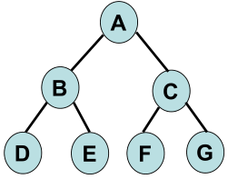

7 Tipe Struktur Data
struktu data yang biasa digunakan dinataranya

Tipe Array mempunyai kumpulan elemen yang jaraknya saling berdekatan. Array dapat membantu seseorang untuk mencari data secara acak hanya menggunakan indeksnya.
Kapasitas elemen yang dapat dialokasikan pada tipe array bersifat statis. Jika Anda ingin menyisipkan elemen baru ke array, maka harus membuat array baru dengan ukuran yang lebih besar. Sebaliknya, jika ingin menghapus elemen tertentu, Anda harus membuat array baru dengan ukuran yang lebih kecil.
Selain itu, array juga memungkinkan Anda untuk menyimpan beberapa data dengan jenis yang sama dalam satu nama. Tipe array biasa digunakan untuk membangun struktur data, seperti vektor dan matriks.
Keunggulan tipe array:
- Bisa digunakan sebagai implementasi tipe lainnya, seperti queue dan stack.
- Proses pencarian data bisa dilakukan lebih cepat.
Kekurangan tipe array:
- Penambahan dan pengurangan data membutuhkan waktu yang lebih lama karena tipe array menampung data secara berurutan.

Linked list adalah struktur data yang terdiri dari urutan data linier yang dihubungkan satu sama lain. Saat menggunakan tipe linked list, Anda harus mengakses data secara manual. Hal ini karena Anda tidak bisa mencari data dengan sistem acak.
Tipe linked list terbagi menjadi tiga jenis, yaitu singly linked list, doubly linked list, dan circular linked list. Ketiganya dapat dibedakan dari proses traversal atau proses kunjungan ke setiap node dalam satu waktu.

Stack adalah tipe struktur data yang linier dan mengikuti urutan tertentu. Adapun urutan yang digunakan adalah LIFO (Last In First Out) atau FILO (First In Last Out). Kedua istilah tersebut artinya sama, yaitu data yang terakhir masuk akan menjadi data yang keluar pertama kali. Sebaliknya, data yang pertama masuk akan menjadi data yang keluar terakhir.
Keunggulan tipe stack:
- Dapat mengelola data secara efisien.
- Bisa membersihkan objek secara otomatis.
- Dapat mengontrol memori dengan mandiri.
Kekurangan tipe stack:
- Kapasitas memori yang sangat terbatas.
- Kemungkinan terjadi overflow ketika jumlah objek terlalu banyak.
- Tidak dapat mengakses data secara acak.

Queue adalah tipe struktur data linear yang mengikuti urutan tertentu, yaitu FIFO (First In First Out). Jadi, data yang masuk pertama kali adalah data yang pertama kali diambil. Analogi sederhana yang menggambarkan tipe ini adalah orang yang sedang mengantre. Siapa yang datang pertama, itulah yang dilayani terlebih dulu.
Keunggulan tipe queue:
- Data yang masuk akan dilayani sesuai urutannya.
- Proses antrean data lebih cepat dan optimal.
- Menangani beberapa tipe data sekaligus.
Kekurangan tipe queue:
- Jika waktu pelayanan habis, maka data yang terakhir masuk tidak bisa dilayani.
- Proses yang rumit saat harus menambah atau menghapus elemen dari tengah.
- Butuh waktu lama untuk mencari antrean

Tree adalah tipe struktur data yang memiliki bentuk seperti pohon. Tipe tree efisien untuk menyimpan data secara hierarkis karena disusun dalam berbagai level. Jadi, tipe ini sering dianggap sebagai kumpulan node yang saling dihubungkan.
Setiap node bisa berisi beberapa data atau link dari node lainnya. Beberapa istilah yang ada pada tipe tree antara lain:
- Root: node yang berada di paling atas..
- Child node: Turunan dari setiap node.
- Parent node: node yang berisi sub-node.
- Siblings: node yang berasal dari parent node yang sama.
- Leaf node: node yang tidak memiliki turunan lagi.
Keunggulan tipe tree:
- Proses mencari data bisa dilakukan dengan cepat.
Kekurangan tipe tree:
- Membutuhkan waktu yang lebih lama untuk memasukkan data karena harus menyesuaikan dengan urutan nilainya.

Graph adalah tipe yang berisi beberapa node yang saling terhubung. Node pada tipe graph disebut sebagai simpul. Jadi, setiap garis akan saling menghubungkan dua simpul. Biasanya tipe ini digunakan untuk menunjukkan jaringan tertentu. Contohnya seperti jaringan telepon.
Tipe graph terbagi menjadi dua jenis jenis, yaitu directed graph dan undirected graph. Directed graph artinya setiap garis akan terhubung ke semua simpul. Sedangkan undirected graph artinya tidak semua simpul akan terhubung dengan garis. Jika sebuah simpul tidak terhubung dengan simpul lainnya, maka disebut dengan isolated vertex.
Keunggulan tipe graph:
- Dapat membantu memeriksa hubungan antar node dengan cepat.
- Bisa membersihkan objek secara otomatisCocok digunakan untuk grafik yang tidak mengandung banyak node..
Kekurangan tipe graph:
- Membutuhkan waktu lama untuk memodifikasi data.

Hash table adalah tipe yang digunakan untuk menyimpan data secara asosiatif. Tipe ini akan menyimpan data dalam format array. Hal ini memungkinkan Anda untuk mengakses data dengan cepat karena cukup menggunakan indeksnya saja.
Operasi utama yang digunakan dalam hash table adalah search (untuk mencari elemen), insert (untuk menyisipkan elemen), dan delete (untuk menghapus elemen). Contoh penggunaan tipe hash table adalah mencari data nama dan nomor telepon.